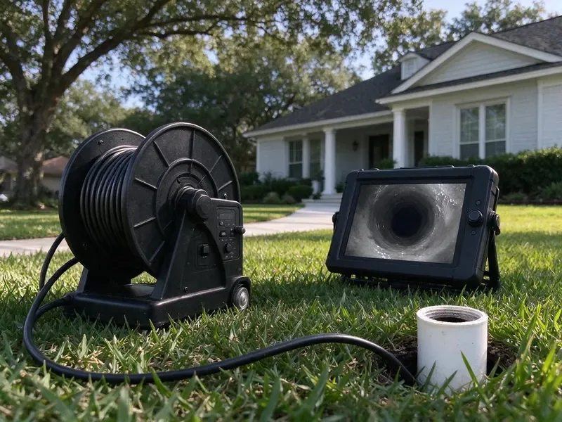

Sewer Line Replacement in Roswell, GA
When your sewer pipe is cracked, collapsed or full of roots, our Roswell, GA team replaces it with durable PVC or HDPE built to last.
- Fast Camera Diagnosis
- Quick, Reliable Service
- Written Workmanship Warranty
- Permits and Inspections Handled

Your Trusted Plumbers for Sewer Line Replacement in Roswell, GA.
Call for a camera inspection and a written estimate for every replacement option.
Sewer Line Replacement in Roswell, GA With Trenchless and Traditional Methods
HGR Plumbing provides complete sewer line replacement for homes across Roswell, GA. Homes are a mix of slab, crawlspace, and basement foundations, and crawlspace homes make most supply and drain repairs easier to reach. Between moving ground and the older pipe found under many neighborhoods, sewer lines are prone to shifting and damage.
Our expertise includes:
- Advanced Pipe Materials
- Two-way cleanout installation at the foundation
- Main Sewer Line Re-Piping and Upgrades

Additional Drain Services Services in Roswell, GA
From stubborn kitchen clogs to main sewer backups, our drain services in Roswell, GA restore full flow fast and keep it that way.


Customers
Why Choose HGR Plumbing for Sewer Line Replacement in Roswell, GA?
Replacing a sewer line is a big decision, so we give you the camera footage and every option with real prices. You choose the method that suits your property.
- Long-Term Reliability, Our installations are built to last, providing you peace of mind for decades.
- Quality Materials, We use durable, high-grade piping materials designed to hold up in Georgia conditions.
- Accurate Diagnosis, We use high-resolution cameras to pinpoint damage, avoiding unnecessary digging.
Citywide Coverage
HGR Plumbing proudly serves every neighborhood in Roswell for sewer line replacement. Whether you're in a historic district or a newly developed area, our team is ready to respond promptly to your call.
Experienced Team
Our team is made up of skilled plumbers with extensive experience in all types of sewer line replacement projects. We continuously train on the latest techniques and safety protocols.
Safety-First Approach
Safety is our top priority on every sewer line replacement project. We follow strict safety protocols to protect your property, our team, and the environment.
Trusted Certified Roswell Plumbing Services Professionals
At HGR Plumbing, we take pride in providing certified plumbing services throughout Roswell, GA. Backed by leading industry credentials, our experienced plumbers combine technical skill with genuine customer care. Whether it is repair, installation, or maintenance, we follow strict safety and quality standards to deliver long-lasting results you can trust.
Call Us Now PHCC Plumbing Contractor Recognition
PHCC Plumbing Contractor Recognition Better Business Bureau (BBB) Accreditation
Better Business Bureau (BBB) Accreditation Angi Certified Pro
Angi Certified Pro ISO 9001 Quality Management Certification
ISO 9001 Quality Management CertificationTrusted Sewer Line Replacement Services in Roswell, GA
Sewer Line Replacement Cost Assessment in Roswell
The cost of sewer line replacement varies significantly based on the method used (trenchless or traditional), the length and depth of the pipe, the type of material, and site access. Before any work begins, HGR Plumbing provides a detailed and transparent cost assessment. We explain all potential expenses, including labor, materials, equipment, and permit fees in Roswell. Our goal is a cost-effective solution without compromising on quality or long-term reliability.

Partial Sewer Line Repair in Roswell, GA
Not every damaged sewer needs full replacement. If the camera shows a single break or one root-damaged joint, a spot repair may solve the problem. We locate the exact spot and depth, excavate a small area and replace that section. This costs much less than replacing the whole lateral. We only recommend it when the rest of the line is in good condition.
Sewer Line Replacement Cost in Roswell, GA
Cost depends on length, depth, soil type, access and the method used. Open-trench replacement in an open yard can be quite affordable per foot, while trenchless methods may cost more per foot but save on restoration. Hardscape, landscaping and driveways change the math quickly. We give you a written estimate for each option after a camera inspection. That way you can compare the full cost, not just the headline price.
Sewer Line Inspection and Diagnostics in Roswell
Before any replacement, a thorough video inspection is essential. We use high-resolution cameras to travel through your sewer lines, identifying the exact location and nature of the problem, whether it is cracks, root intrusion, or collapsed sections. This accuracy lets us recommend the most appropriate and cost-effective replacement plan. That way we address the real cause of your sewer issues in Roswell.
Sewer Line Material Upgrades in Roswell
Many older homes in Roswell still have sewer lines made from outdated materials like clay or cast iron, which are prone to cracking, corrosion, and root invasion. We offer upgrades to modern, more durable materials such as PVC or HDPE (high-density polyethylene). These materials resist corrosion, roots, and shifting soil, giving your sewer system a much longer lifespan.
Residential Sewer Line Services in Roswell, GA
HGR Plumbing focuses on residential sewer line replacement for Roswell, GA homeowners. Homes are a mix of slab, crawlspace, and basement foundations, and crawlspace homes make most supply and drain repairs easier to reach. We address the issues we see most, such as tree root intrusion, shifting ground, and aging cast iron or clay pipes. Our work keep your home's plumbing system working properly, protecting your property from sewage backups and potential foundation damage.
Trenchless Pipe Bursting in Roswell
Pipe bursting replaces the old sewer line by pulling a new pipe through the path of the old one. A bursting head breaks the old pipe outward while fused HDPE pipe follows behind. This usually needs only an entry pit and an exit pit instead of a long trench. It works well under driveways, mature trees and landscaping. The new pipe is seamless, which leaves no joints for roots to enter.

Sewer Pipe Lining as an Alternative in Roswell
Cured-in-place pipe lining creates a new pipe inside the old one. After cleaning, a resin-soaked liner is pulled in and cured in place. This works when the host pipe still holds its shape without major sags or collapse. Lining can be a good option under slabs or finished areas. We tell you honestly if your line is a candidate.
Sewer Line Replacement Near Me in Roswell, GA
We also understand the soils, pipe materials and landscaping typical in this area. That knowledge goes into an accurate estimate and fewer surprises. When the job is done, we are close by if you ever need us again.
When you search for 'sewer line replacement near me' in Roswell, GA, you'll find HGR Plumbing as a trusted local expert. We know the plumbing infrastructure and local conditions that affect sewer lines in our area.
HGR Plumbing at a Glance
- Fully licensed plumbing team covering Roswell, GA
- Same-day appointments and 24/7 emergency response
- Clear written estimates, no hidden fees
- 4.9-star rated by 357+ Georgia customers
Roswell Map
Roswell Information
- Population
- 91,706
- Area codes
- 770/470/678
- Service area
- Roswell and communities within 40 miles
- Nearby
- Alpharetta, Dunwoody, Sandy Springs, Johns Creek
Aging clay, cast iron and Orangeburg laterals make professional sewer line replacement a sound long-term investment for homes in Roswell, GA.
Expert Services
Trust our professionals for reliable HGR Plumbing solutions in Roswell, GA.
Our Specialized Plumbing Services in Roswell, GA
At HGR Plumbing, we provide a complete range of plumbing services across Roswell, GA. From leak detection to full system installations, our team ensures fast, precise, and affordable service for both residential and commercial properties. Explore our core services below:


Here Is How Our Sewer Line Replacement Process Works in Roswell, GA
Replacing a sewer line is a real project, and we manage it from inspection to final restoration.
Request a Quote
Call (770) 470-3778 to schedule a camera inspection of your sewer line. We review the footage with you and explain what we see.
Plan and Permit
We give you written options with prices and pull the required permits. Utility locates are called in before work begins.
Replace and Restore
Our crew installs the new pipe and passes inspection. Then we backfill, compact and tidy up the work area.
Frequently Asked Questions About Sewer Line Replacement in Roswell
The cost of sewer line replacement in Roswell, GA can range from $4,000 to $20,000 or more, depending on the length of the pipe, depth, replacement method, and the materials used. Trenchless work often costs more upfront but saves on landscaping. A trenchless job might run $80 to $250 per foot, while traditional excavation could be $50 to $200 per foot, not including restoration. We provide a detailed quote after a thorough inspection.
Most policies do not cover wear and tear or root damage to sewer lines. Some offer service line coverage as an add-on, so check your policy.
Yes, sewer line replacement usually requires a permit and inspection. We handle the paperwork and schedule the inspection.
It is a major project that involves excavation, slope calculations, permits and inspection. Most homeowners find hiring a licensed plumber is safer and avoids costly mistakes.
Yes, we offer trenchless sewer line replacement options like pipe bursting in Roswell. This method limits disruption to your landscaping, driveway, and yard by replacing the old pipe with a new one through small access points. It's an ideal solution for many homeowners looking to avoid extensive digging.
The duration depends on the complexity and method. A trenchless replacement might take 1 to 3 days, while a traditional trenched replacement could take 3 to 5 days, sometimes longer for larger projects. We will give you a clear timeline estimate during your consultation.
Common signs include frequent sewage backups in multiple drains, gurgling noises from toilets, foul odors inside or outside your home, unusually lush or wet spots in your yard, and sudden increases in your water bill. If you notice any of these, it's time to call a licensed plumber.
Traditional replacement involves digging a trench to access and replace the entire pipe, which can be more invasive to your yard. Trenchless methods, like pipe bursting or pipe lining, require minimal digging, often just two access points, preserving your landscaping while installing a new pipe.
What People Are Saying About Our Plumbing Experts?

Emily R.
I called HGR Plumbing for plumbing repair, and the technician was fast, polite, and thorough. They explained the problem clearly and fixed it the same day. I will definitely hire them again. Highly recommended!
Plumbing Repair · Dunwoody, GA
Daniel K.
A pipe burst at 11 pm and they actually answered. The plumber showed up within the hour, shut everything down, and had us back to normal the next morning. Could not ask for more.
Emergency Plumbing · Alpharetta, GA
Laura S.
I scheduled a water heater replacement, and the team made the process smooth and affordable. The new unit works perfectly, and they cleaned up after completing the job.
Water Heater Replacement · Roswell, GA
James P.
Our commercial plumbing system had a leak under the sink, and HGR Plumbing handled it professionally. The plumbers arrived quickly and restored everything without disruption to our customers.
Commercial Plumbing · Alpharetta, GASofia M.
Two new toilets installed in one visit, no mess left behind, and the tech even adjusted a faucet he noticed was dripping. Fair pricing and really friendly.
Toilet Installation · Brookhaven, GARobert G.
The trenchless sewer replacement saved our front yard. They walked us through the camera inspection footage first so we knew exactly what we were paying for.
Sewer Line Replacement · Johns Creek, GA